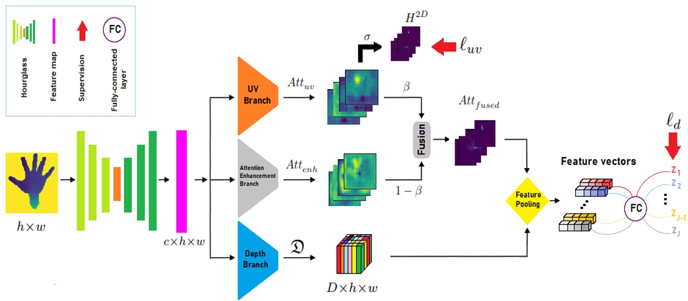

About Me
I'm a computer scientist with a deep-seated passion for understanding and leveraging the power of data. My primary interests lie in the fascinating realms of statistical modeling and deep learning, where I'm particularly drawn to their transformative applications in Natural Language Processing and Computer Vision. I'm motivated by the potential of these technologies to solve complex real-world problems and build intelligent systems that can understand and interact with the world around us.
Projects
TriHorn-Net
TriHorn-Net: I proposed and implemented a novel two-stage network architecture for hand pose estimation from depth images. This network, called TriHorn-Net, utilizes a unique combination of three attention-based branches to accurately predict joint positions. My approach, which includes a constrained UV branch and an unconstrained attention enhancement branch fused to guide feature pooling, achieves state-of-the-art performance in the field.
Technologies Used: Python, Pytorch, Deep Learning
Project Title 2

A brief description of your second project. What problem did it solve? What was your role?
Technologies Used: Python, Django, PostgreSQL
Contact
Feel free to reach out!
Email: mohammad.rezaei92@gmail.com